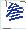

最近学习了KMeans算法，想着把KMeans用到验证码识别中试试效果
验证码大概长这样：

这是一个算术验证码，里面的大概包含了一到九的简体和繁体字，以及加减乘除四个字，共计24个类别
训练代码如下：1
2
3
4
5
6
7
8
9
10
11
12
13
14
15
16
17
18
19
20
21
22
23
24
25
26
27
28
29
30
31
32
33
34
35
36
37
38
39
40
41
42
43
44
45
46
47
48
49
50
51
52
53
54
55
56
57
58
59
60
61
62
63
64
65# -*- coding:utf-8 -*-
import numpy as np
import tensorflow as tf
from tensorflow.contrib.factorization import KMeans
# deal_data是我本地的样本处理脚本，这里就不放上来了
from deal_data import train_X, train_Y, test_X, test_Y
train_X = train_X / 255
train_Y = train_Y / 255
test_X = test_X / 255
test_Y = test_Y / 255
# 这里X是一个？*780的数组，对应？张图片。每张图片大小为30*26，拉成一维后：780
# Y 是每张图片对应的分类，值为onehot形式，维度为（?,24）
# 参数设置
num_steps = 1000 # 迭代次数
k = 24 # 聚类中心数目
num_classes = 24 # 数据标签数目
# 定义占位符
X = tf.placeholder(dtype=tf.float32, shape=[None, 780])
Y = tf.placeholder(dtype=tf.float32, shape=[None, num_classes])
# kmeans初始化
# 使用余弦相似度，cosine
kmeans = KMeans(inputs=X, num_clusters=k, distance_metric="cosine", use_mini_batch=True)
all_scores, cluster_idx, _, _, init_op, training_op = kmeans.training_graph()
# all_scores： 所有的输入与对应对的中心的相似度，维度为（?，24）
# cluster_idx：每个图片对应的聚类中心点,
# init_op：kmeans聚类中心的初始化操作节点
# training_op：kmeans的训练迭代节点
cluster_index = cluster_idx[0] # cluster_idx是一个元组，第一个元素才是每个图片对应的聚类中心点索引
avg_distance = tf.reduce_mean(all_scores) # 计算相似度的平均值
init_param = tf.global_variables_initializer() # tensorflow全部变量的初始化操作节点
with tf.Session() as sess:
# 运行tensorflow变量初始化
sess.run(init_param)
# 运行kmeans初始化
sess.run(init_op, feed_dict={X: train_X})
# 开始迭代
for i in range(1, num_steps+1):
_, distance, idx = sess.run([training_op, avg_distance, cluster_index], feed_dict={X: train_X})
if i % 10 == 0 or i == 1:
print("Step: %d, distance=%f" % (i, distance))
counts = np.zeros(shape=(k, num_classes))
for i in range(len(idx)):
# counts 记录的时每一个聚类中心下的图片分类统计，
counts[idx[i]] += train_Y[i] # 维度：（len(idx)，24）
# clustags_to_imtags记录的是每一个聚类中心下分布最多的图片分类，
clustags_to_imtags = [np.argmax(c) for c in counts] # 维度：（len(idx)）
# 将clustags_to_imtags转化成张量
clustags_to_imtags = tf.convert_to_tensor(clustags_to_imtags)
# ------------------------------------------------
# 下面是验证时的运算图
# pred_label是将每一个图片的聚类中心的分布最多的那个图片分类作为预测的结果
pred_label = tf.nn.embedding_lookup(clustags_to_imtags, cluster_index) # 维度：（len(idx)）
# 计算正确率
equal_prediction = tf.equal(pred_label, tf.cast(tf.argmax(Y, 1), tf.int32))
accuracy_op = tf.reduce_mean(tf.cast(equal_prediction, tf.float32)) # tf.cast(equal_prediction, tf.float32) 可以将bool值转化为1.0或者0.0,这样计算平均值接可以得到正确率
# 测试模型
test_x, test_y = test_X, test_Y
print("验证集准确率:", sess.run(accuracy_op, feed_dict={X: test_x, Y: test_y}))
训练结果：1
2
3
4
5
6
7
8
9
10
11
12
13
14
15
16
17
18Step: 1, distance=0.174805
Step: 10, distance=0.118283
Step: 20, distance=0.118261
Step: 30, distance=0.118271
Step: 40, distance=0.118258
Step: 50, distance=0.118246
Step: 60, distance=0.118242
...
Step: 920, distance=0.118216
Step: 930, distance=0.118216
Step: 940, distance=0.118216
Step: 950, distance=0.118216
Step: 960, distance=0.118216
Step: 970, distance=0.118216
Step: 980, distance=0.118216
Step: 990, distance=0.118216
Step: 1000, distance=0.118216
验证集准确率: 0.38709676
这里由于训练样本数量有限，全手动打标签，只标注了760张，所以正确率有点低，验证集只有大概0.387的正确率，等后面有时间再考虑增加数据量